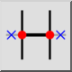
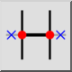
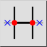
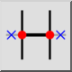

Auto trimmen
Werkbalk / icoon:
 

Menu: Modificeren > Auto trimmen
Sneltoets: A, X
Opdrachten: autotrim | ax
Dit is een automatische vertaling.
Werkbalk / icoon:
 

Menu: Modificeren > Auto trimmen
Sneltoets: A, X
Opdrachten: autotrim | ax
Verkort of verlengd een object aan beide zijden tot de volgende beperkende objecten.